ԲՆՈՒԹԱԳԻՐ
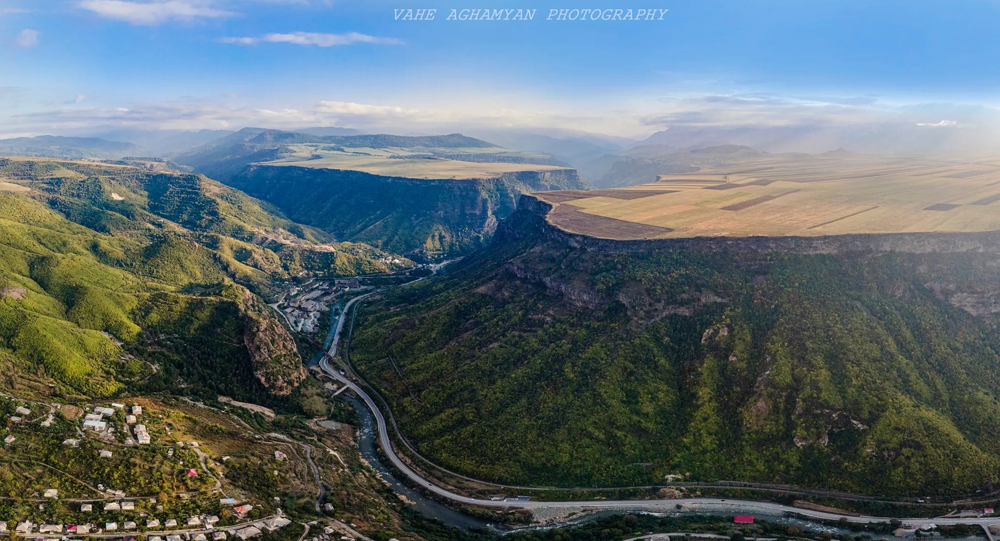
ՏՎՅԱԼՆԵՐ
Ուղղություն
Արևմուտքից
Արևելքից
Հարավից
Հարավից
Հյուսիսից
Սահմանակից մարզ
Շիրակ
Տավուշ
Արագածոտն
Կոտայք
-
Հարևան երկրներ
-
-
-
-
Վրաստան
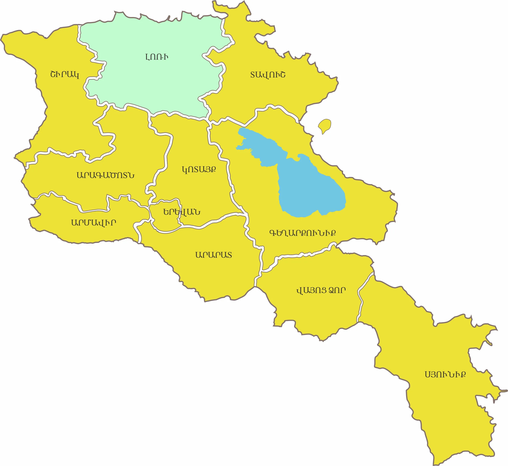
Հիմնադրումը
ՀՀ Լոռու մարզը կազմավորվել է 1995 թվականի նոյեմբերի 7-ին:
Տարածքը
Լոռու մարզը զբաղեցնում է Հայաստանի ամբողջ տարածքի մոտ 12.7%-ը (3,799 կմ² )
Վարչական կենտրոն
Վանաձոր քաղաք (Կիրովական): Գտնվում է Երևանից 70 կմ հյուսիս-արևելք։ Մարզի ամենախոշոր, Հայաստանի 3-րդ խոշոր քաղաքն է: Տարածքը բնակեցված է եղել դեռևս Բրոնզի դարից: Որպես քաղաք հիմնադրվել է 1828թ.-ին:
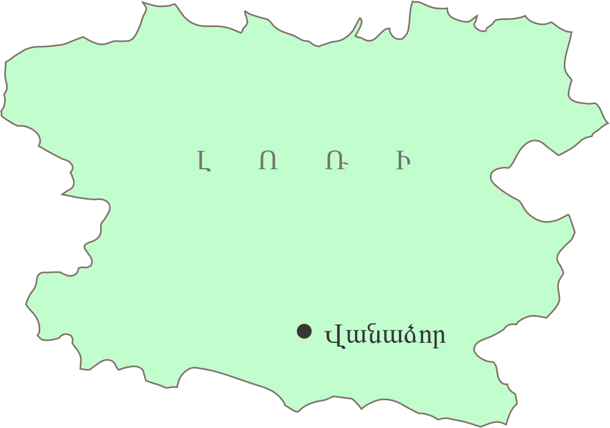
Ցուցիչ
Տարածք
Կոորդինատներ
Բարձրություն
Ամենաբարձր գագաթ
Ամենացածր կետ
Վարչական կենտրոն
Տարածաշրջաններ
Քաղաքներ
Գյուղեր
Բնակչություն
Հեռավորություն Երևանից
Փոստային դասիչ
Թեժ գիծ
Վեբ կայք
Տվյալ
3,799 քառ. կմ (12.7%)
40°55′ հս.լ., 44°30′ ավ.ե.
3,196 մ – 380 մ
Աչքասար (3,196 մ)
Դեբեդ գետի ստորին հոսանք (375 մ)
Վանաձոր
Սպիտակ, Ստեփանավան, Տաշիր, Թումանյան, Գուգարք
Վանաձոր, Ալավերդի, Ստեփանավան, Սպիտակ, Տաշիր, Թումանյան, Ախթալա, Շամլուղ
122
217.4 հազ.
112 կմ
1701–2117
(+374 322) 2-33-99
lori.mtad.am
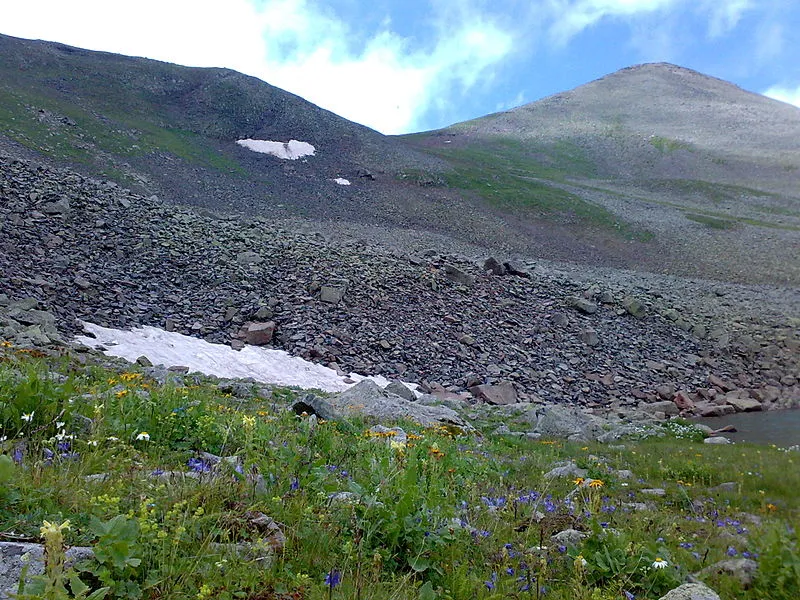

Ամենաբարձր գագաթ Աժդահակ լեռ (3,598 մ)
Մարզային հեռախոսային կոդեր
Բնակավայր
Վանաձոր
Սպիտակ
Ստեփանավան
Տաշիր
Մեծավան
Ալավերդի
Թումանյան
Աղթալա
Կոդ
322
255
252
254
254
253
253
253
Մարզպետարան/Կապ
Հասցե․ ք. Վանաձոր 2001, Հայքի հրապարակ
Վեբ․ lori.mtad.am
Էլ․ հասցե․ lori@mta.gov.am
Հեռ./ֆաքս․ (0322) 4-61-92, (0322) 2-28-77
-
-
-
-
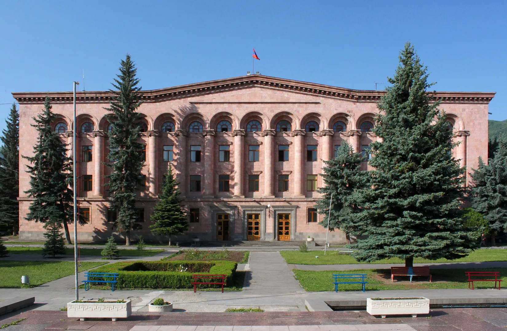
ԻՆՉՊԵՍ ՀԱՍՆԵԼ
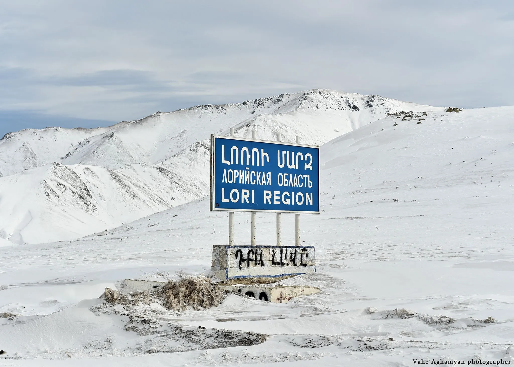
Ավտոմայրուղիներ
Լոռին բարեկարգ ավտոխճուղիներով կապված է հարևան մարզերի և Վրաստանի հետ։
Մարզի տարածքով անցնում են երկու միջպետական մայրուղիներ, որոնք տանում են դեպի Վրաստան՝
- Վանաձոր – Ալավերդի – Վրաստանի սահման
- Վանաձոր – Ստեփանավան – Տաշիր – Վրաստանի սահման
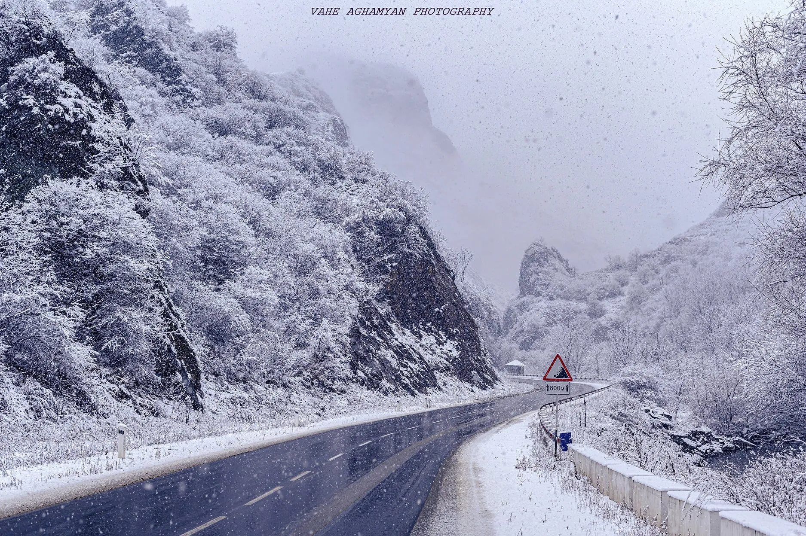
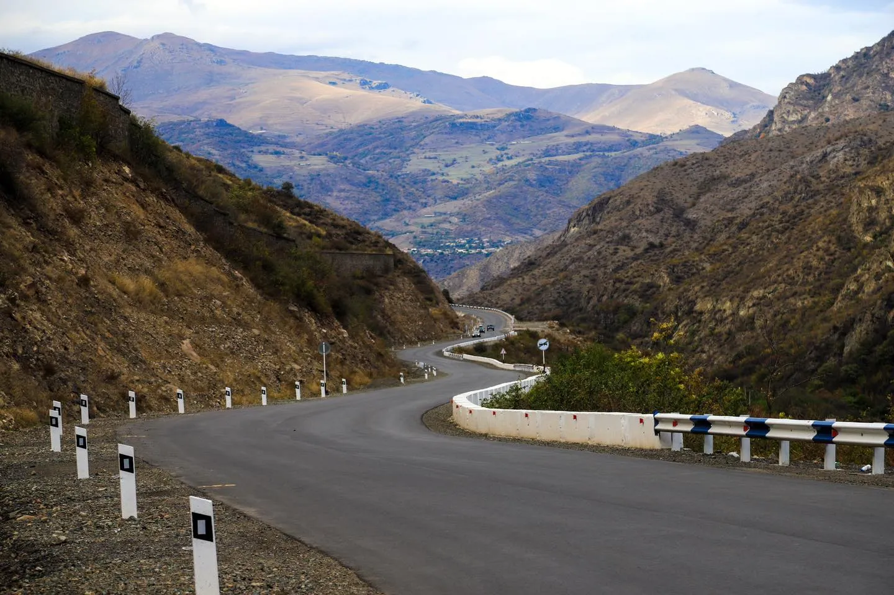
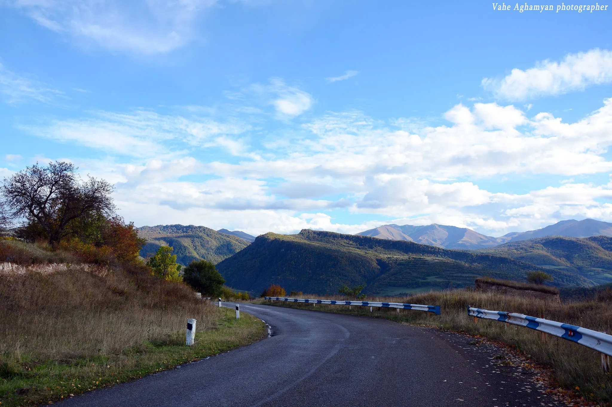
Երթուղային տաքսի և ավտոբուս
Երևանից Վանաձոր կարելի է հասնել ավտոբուսով կամ երթուղային տաքսիով․
- Ճանապարհը տևում է մոտ 1 ժամ 45 րոպե
- Երթուղիները մեկնարկում են Կիլիկիա և Հյուսիսային ավտոկայաններից, ինչպես նաև Կենտրոնական երկաթուղային կայարանից
- Տոմսի արժեքը կազմում է 800–1200 դրամ Բացի այդ, մարզով անցնում է նաև Թբիլիսի–Երևան երկաթուղին, որը ևս կապում է Հայաստանը Վրաստանի հետ։
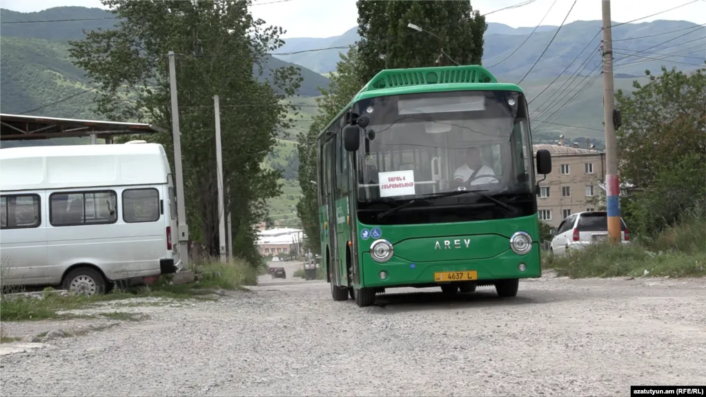
Երկաթուղի
Մարզի տարածքով է անցնում Թբիլիսի-Երևան երկաթուղին, որը Հայաստանը կապում է Վրաստանի հետ:
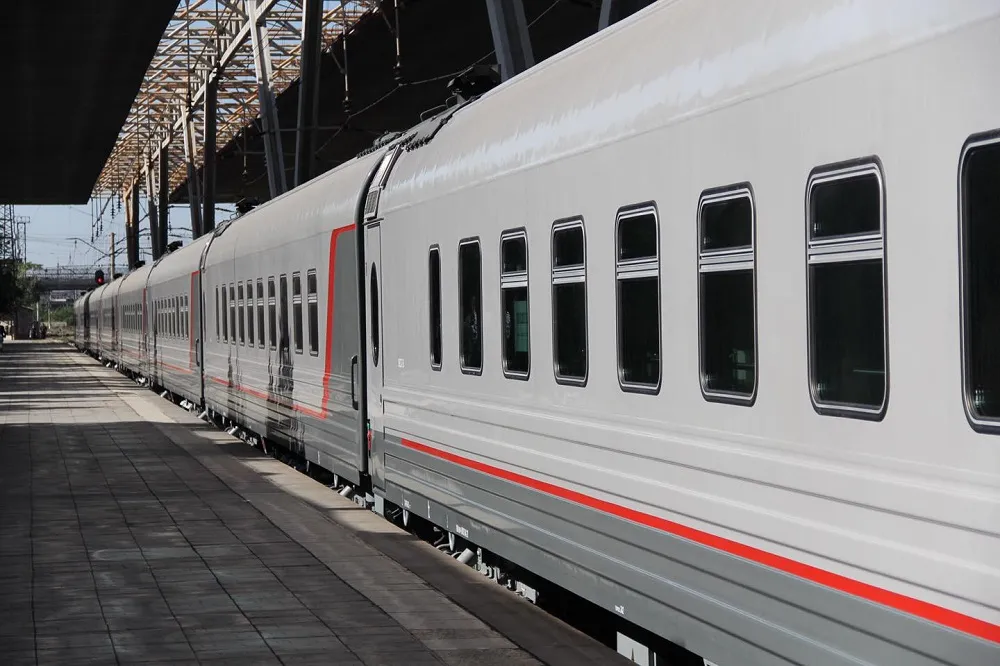
ԿԼԻՄԱ

Լոռու մարզը գտնվում է Հայաստանի հյուսիսում՝ ծովի մակարդակից 1600–1700 մ բարձրության վրա, առավելագույն բարձրությունը՝ 3196 մ: Մարզը ընդգրկում է տարբեր լանդշաֆտային ենթաշրջաններ՝ լեռնա-մարգագետնային, տափաստանային, անտառա-տափաստանային և լեռնա-հովտային:
Կլիմայի առանձնահատկություններ
- Մարզի տարածքի գերակշիռ մասը գտնվում է միջին և բարձրադիր գոտիներում
- Ավելի ցածրադիր վայրերում՝ նախալեռնային, մերձարևադարձային կլիմա՝ մեղմ ձմեռներով և չափավոր շոգ ամառներով
- Լոռուն բնորոշ է համեմատաբար խոնավ կլիմա
- Կարճ զով ամառներ և ցուրտ ձմեռներ բարձրադիր շրջաններում
- Տաք ու մեղմ ձմեռներ տափաստանային և հովտային հատվածներում
- Ձմեռը ձյունառատ է, ամառը զով ու արևոտ, երբեմն շոգ օրերով;
Եղանակների բնութագիր
Ձմեռ - երկարատև, ցրտաշունչ, հաճախ բուքերով, կայուն ձնածածկույթ՝ 75–160 օր
Ամառ - զով ու արևոտ (+16…+23°C), հուլիս-օգոստոսին առավելագույնը հասնում է 34–38°C
Գարուն – խոնավ, տեղումնառատ, հաճախ ամպրոպներով և կարկուտով
Աշուն – սկզբում մեղմ ու արևոտ, ապա՝ սառնաշունչ և մառախուղներով
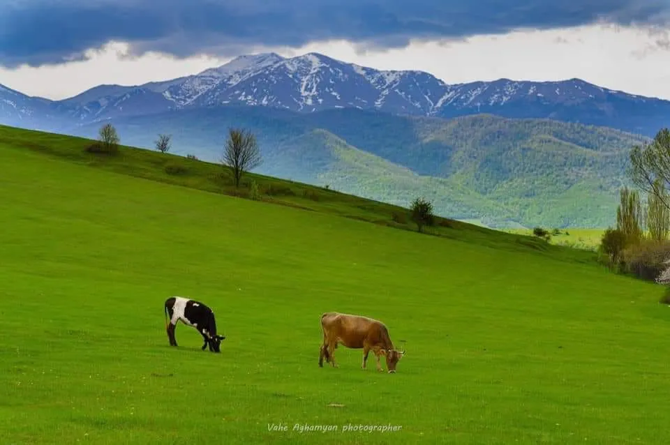
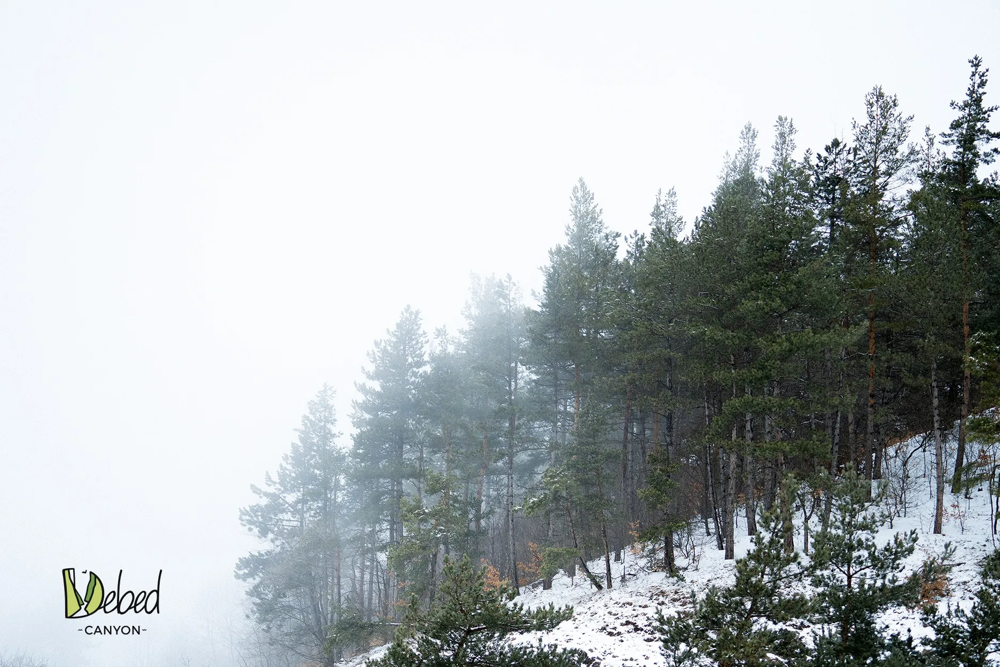
Ջերմաստիճան
- Միջին տարեկան՝ 5–12°C
- Ամառային միջին ջերմաստիճան՝ +18°C
- Հունվարի միջին ջերմաստիճան՝ -4.8°C
- Հունվար՝ -12…-2°C (բարձրադիր շրջաններում մինչև -38°C)
- Հուլիս–օգոստոս՝ +10…+23°C (բարձրադիր շրջաններում +14…+17°C)
- Բացարձակ առավելագույն՝ +37–38°C
- Բացարձակ նվազագույն՝ -38°C:
Տեղումներ
- Տեղումների միջին տարեկան քանակ՝ 600-700 մմ, բարձրադիր շրջաններում՝ 700–1000 մմ և ավելի, նվազագույնը՝ 400մմ
- Ձմռանը գոյանում է կայուն ձնածածկույթ
- Ձնածածկույթի առավելագույն տասնօրյակային բարձրությունը՝ մոտ 0-60 սմ (միջին տվյալ), բարձրադիր շրջաններում՝ մինչև 160 սմ
- Հողի սառչելու առավելագույն խորությունը՝ 30-40 սմ
- Օդի հարաբերական խոնավության միջին տարեկան ցուցանիշ՝ 75-80%:
Քամիներ
- Մարզում հանդիպում են հարավ-արևմտյան և հյուսիս-արևելյան քամիներ
- Միջին արագություն՝ 1.4–6.3 մ/վ, առավելագույն արագությունը դիտվում է լեռնանցքներում, Պուշկինի լեռնանցքում կազմում է 43մ/վ, պոռտքումը` 53մ/վ
- Ամառային քամիները մեղմացնում են տապը, ձմեռայինը հաճախ բուք է ստեղծում
- Առավելագույն արագությունը Պուշկինի լեռնանցքում կազմում է 43մ/վ, պոռտքումը` 53մ/վ:
Մթնոլորտային երևույթներ
- Մառախուղ՝ մինչև 203 օր (Պուշկինի լեռնանցք)
- Ամպրոպներ՝ տարեկան 50–70 օր, առավելագույնը 108 օր (Տաշիր)
- Կարկուտ՝ նորմայից հաճախ, գյուղատնտեսությանը վնաս հասցնելով:
Արևափայլ
- Միջին տարեկան տևողությունը՝ 2000–2200 ժամ
- Ամառային ամիսներին արևափայլն առատ է, միջին հաշվով 2700–2800 ժամ տարեկան:
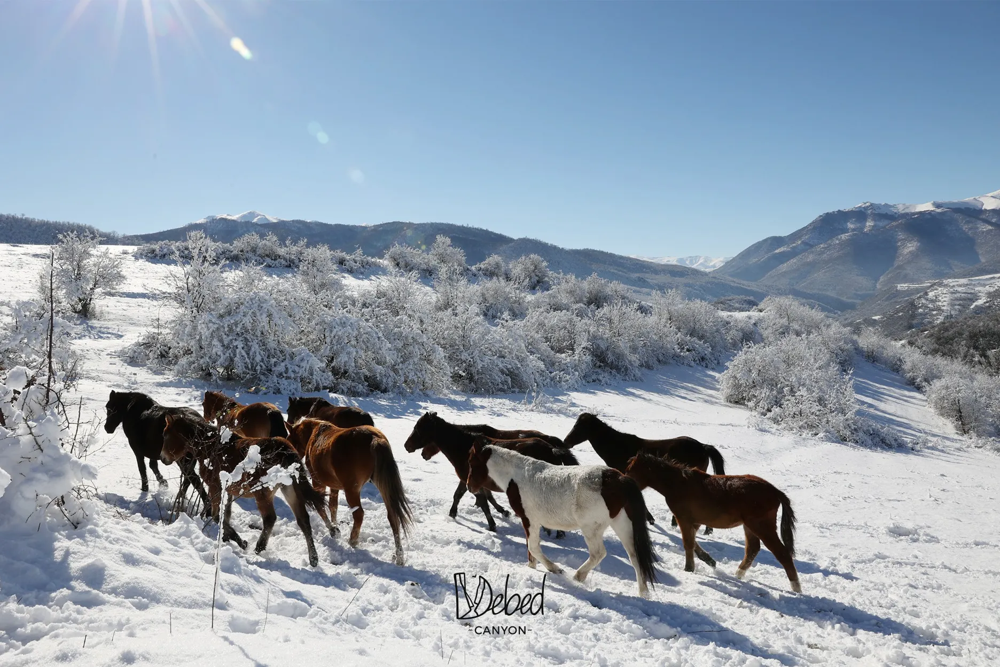